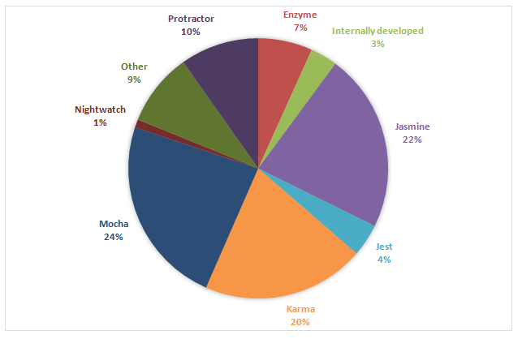

<h3 style="color:#e7ad52">TDD with Jest</h3>
#### Topics going to be covered - What is TDD? - [Jest](https://jestjs.io/) - [Enzyme](https://airbnb.io/enzyme/) - Snapshot testing
#### TDD - In the long run provides huge speed of development - Is a documentation for the code - RGF cycle
#### Red! Green! Refactor!
#### Misconceptions 1. TDD is too Time Consuming. The Business Team Would Never Approve 2. You Have to Write All Tests Before You Write the Code 3. If I use TDD I only need unit tests! 4. I can always write tests later
#### Xtreme programming Includes ... - TDD - Pair programming ...
<img style="width: 70%; height: 70%" src="../../presentation_pictures/tdd_with_jest/pair_programming.jpeg" />
#### Frontend testing frameworks 
#### Frontend testing frameworks <img style="width: 15%; height: 15%" src="../../presentation_pictures/tdd_with_jest/jasmine.png" /> <img style="width: 15%; height: 15%" src="../../presentation_pictures/tdd_with_jest/jest.png" /> <img style="width: 15%; height: 15%" src="../../presentation_pictures/tdd_with_jest/enzyme.png" />
#### [Jest](https://github.com/facebook/jest) 1. Developed by FB 2. Regular testing framework 3. Works great with react
#### [Testing functions](https://github.com/narghev/jest_examples/blob/master/src/testing_functions/functions.test.js) ```js const sum = (a, b) => a + b; describe('Sum function', () => { test('adds two numbers correctly', () => { expect(sum(1, 2)).toBe(3); expect(sum(5, 1)).toBe(6); expect(sum(11, 6)).toBe(17); expect(sum(64, 1)).toBe(65); expect(sum(0, 134)).toBe(134); }); }); ```
#### Testing React Components [Stateless components](https://github.com/narghev/jest_examples/blob/master/src/testing_react_components/stateless.test.js) [Statefull components](https://github.com/narghev/jest_examples/blob/master/src/testing_react_components/stateful.test.js)
#### render vs shallow vs mount - Render: No lifecycles, Renders children, Less api - Shallow: No children rendering, Isolated, you know for sure the error comes from here - Mount: Lifecycle methods (like componentDidMount), Renders children
#### Notes - Jest comes with [CRA](https://github.com/facebook/create-react-app) - Enzyme Adapter - [setupTests.js](https://github.com/narghev/jest_examples/blob/master/src/setupTests.js)
#### Snapshot testing
#### Snapshot testing [Different from unit testing?](https://github.com/narghev/jest_examples/blob/master/src/testing_react_components/snapshot.test.js)
#### Snapshot testing
#### Updating the Snapshot
#### Snapshot testing VS TDD <span style="color: green">Green!</span> Refactor! <br> <br> <span style="color: red">Red?</span>
## Q and A #### THANK YOU!